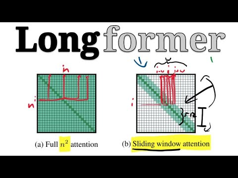
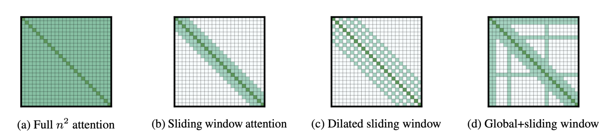
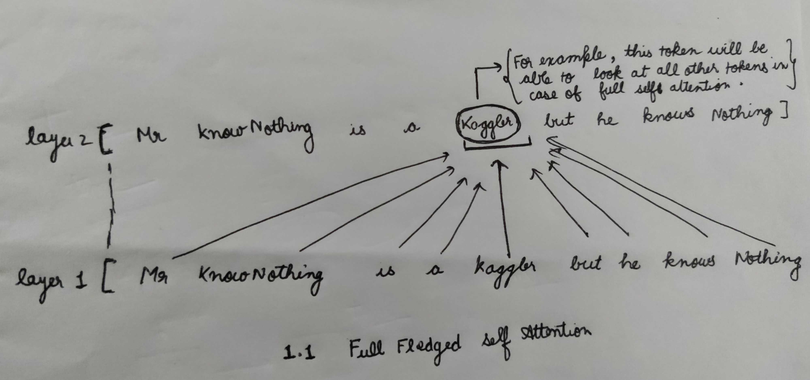
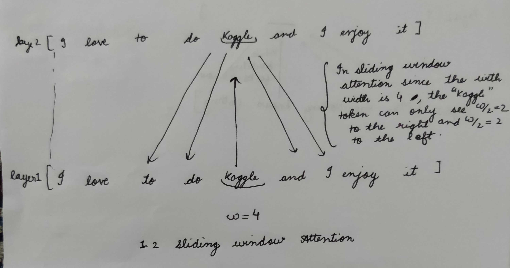
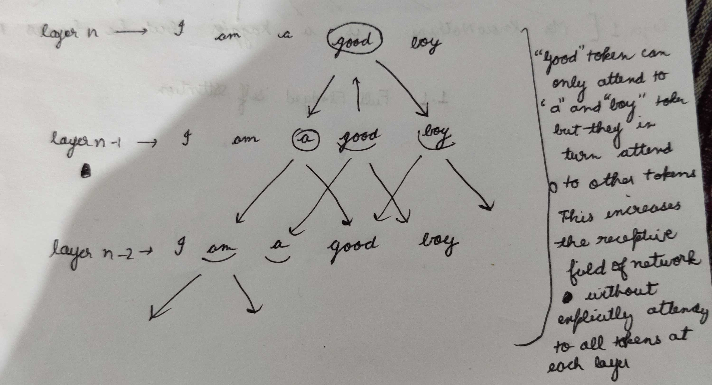
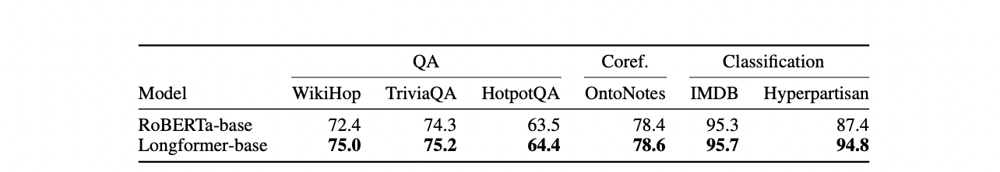

Transformer-Based Models have become the go to models in about every NLP task since their inception, but when it comes to long documents they suffer from a drawback of limited tokens . Transformer-Based Models are unable to process long sequences due to their self attention which scales quadratically with the sequence length . Longformer addresses this limitation and proposes an attention mechanism which scales linearly with sequence length, making it easy to process documents of thousands of tokens or longer. Longformer’s attention mechanism is a drop-in replacement for the standard self-attention and combines a local windowed attention with a task motivated global attention (more on this later in this article) .
In this article we will deep dive into the Longformer Paper and look at all of its components in depth , exploring the results and techniques to use it efficiently.

What Happenend Before LongFormer?
This is a question that would have come into your mind , that if not Longformer then what ? Before the LongFormer or even now , people often used chunking strategy , wherein , a long document is chunked into 512 token chunks with or without an overlapping window and are processed separately . While it is a good work around for Long Documents , this approach suffer from information loss due to truncation or cascading errors , especially when doing NER or Span Extraction where we need the whole context to understand and mark the labels correctly . Some other Task specific workarounds have also been explored , like sparse attention that defines some form of sparse attention pattern and avoids computing the full quadratic attention matrix multiplication . LongFormer tries to adopt the second method and presents a new SOTA for Long Documents
LongFormer Attention : Components

LongFormer proposes a sparsified form of self-attention , wherein ,they sparsify the full self-attention matrix according to an “attention pattern” specifying pairs of input locations attending to one another. Unlike the full self-attention, the proposed attention pattern scales linearly with the input sequence, making it efficient for longer sequences. Let’s look into the components of the Attention Pattern .
Sliding Window Attention
A full-fledged Self-Attention allows the model to look at all the tokens in the input sentence but comes with a computational complexity . Below is an example of Full Self-Attention

In an attempt to reduce computational complexity without losing local context , Longformer proposes fixed-size window attention surrounding each token. Given a fixed window size w, each token attends to 1/2w tokens on each side as shown in figure below

Since there are n encoder layers stacked on top of each other in a typical Transformer-Base Network, using multiple stacked layers of such windowed attention results in a large receptive field, where top layers have access to all input locations and have the capacity to build representations that incorporate information across the entire input, similar to CNNs (see figure below) . Thus even though any token in the first layer can only see only w/2 tokens on both sides at the time , the topmost layers can see effectively look at L*W tokens , a simple example is shown in the example below

The computation complexity of this pattern is O(n × w), which scales linearly with input sequence length n. Even though this attention pattern results in a high receptive field at the top layers , one can tweak the attention width depending upon the type of problem being solved and compute power to increase the receptive field even further and guage more context .
Dilated Sliding Window Attention
To further increase the receptive field without increasing computation, the sliding window can be “dilated” . This is analogous to dilated CNNs where the window has gaps of size dilation d . In the similar example as above we can have a window attention with dilation d that means we will attend to words with a difference of d within a window w+d , thereby increasing the number of tokens the model can see at a time . Assuming a fixed d and w for all layers, the receptive field is L × d × w, which can reach tens of thousands of tokens even for small values of d.
Global Attention
While the windowed attention solves the problem of complexity and captures local context , it still lacks the flexibility to learn task-specific representations . Longformer thus allows few tokens to attend globally in a symmetric way that is, a token with a global attention attends to all tokens across the sequence, and all tokens in the sequence attend to it. For example for classification, global attention is used for the [CLS] token while in QA global attention is provided on all question tokens. While specifying global attention is task specific, it is a easy way to add inductive bias to the model’s attention.
LonFormer Attention : Implementation
Now that we have a good understanding of all components of LongFormer Attention and its pattern , we will look at its implementation. Transformer model computes attention scores as follows:
$Attention(Q, K, V ) = softmax(QKT√dk) V$ (1)
Longformer uses two sets of projections, Qs, Ks, Vs to compute attention scores of sliding window attention, and Qg, Kg, Vg to compute attention scores for the global attention. The additional projections provide flexibility to model the different types of attention, which is critical for best performance on downstream tasks. In Equation (1) ,The expensive operation is the matrix multiplication QKT because both Q and K have n (sequence length) projections. For Longformer, the dilated sliding window attention computes only a fixed number of the diagonals of QKT. This results in a linear increase in memory usage compared to quadratic increase for full self-attention.
Note : LongFormer Attention Pattern can be used as a drop in replacement and can be plucked into any pretrained transformer model without the need to change the model architecture .
Training Procedure
According to the authors , one of their main motivations is to develop a Pretrained Model which can be suitably used for downstream tasks for long documents and is suitable . To do so they pretrain the Longformer model on a document corpus and finetune it for six tasks, including classification, QA and coreference resolution. The resulting model can process sequences up to 4,096 tokens long (8 times longer than BERT)
Training Objective
They pretrain Longformer with masked language modeling (MLM) objective similar to BERT, where the goal is to recover randomly masked tokens in a sequence. Since MLM pretraining is expensive, they continue pretraining from the RoBERTa released checkpoint, while only making the minimal changes necessary to support Longformer’s attention mechanism
Attention Pattern
They use sliding window attention with window size of 512, therefore using the same amount of computation as RoBERTa.
Position Embeddings
RoBERTa uses learned absolute position embeddings with the maximum position being 512. To support longer documents, they add extra position embeddings to support up to position 4,096. To leverage RoBERTa’s pretrained weights, instead of randomly initializing the new position embeddings, they initialize them by copying the 512 position embeddings from RoBERTa multiple times
Continued MLM PreTraining
The Authors pretrain Longformer using fairseq on a corpus of long documents that they compiled. They train two model sizes, a base model and a large model. Both models are trained for 65K gradient updates with sequences length 4,096, batch size 64 (218 tokens), maximum learning rate of 3e-5, linear warmup of 500 steps, followed by a power 3 polynomial decay. The rest of the hyperparameters are the same as RoBERTa.
Results
The Authors apply the trained Longformer on multiple long document tasks, including QA, coreference resolution and classification . Below Table contains the results for each of the three tasks . Longformer Base beats Roberta-base in each of the three long document tasks and achieves new SOTA for long documents . Its performance gain is especially obvious for tasks that require long context such as WikiHop and Hyperpartisan.

There are some tricks that the author have used to increase the performance for LongFormer
- Differential Attention Window : As explained every layer in LongFormer only looks at the tokens in the attention window , given that there is performance vs compute tradeoff by increasing or decreasing those attention window . The LongFormer authors use large attention window on the top layers and bottom attention window on the lower layers , the intuition being bottom layer mine the syntactic and semantic information while the top layers mine task specific information
- Global Attention : Global attention helps the LongFormer to learn the inductive bias for the task , hence choosing the tokens to attend to globally can really enhance performance .The authors demonstrate this by using global attention on Questions in Q/A Task and on CLF token in Classification Task.
Conclusion
LongFormer effectively presents an Attention Mechanism which not only scales linearly with sequence length but also beats SOTA Roberta model on Long Document Tasks . Although the Global Attention of Longformer remains task specific , its a fair trade given the results and optimizations. LongFormer attention Pattern gives a solid starting point to be used with other models as well like XLNet, MPnet ,etc.
If you have enjoyed the blog, I will recommend reading the original paper.